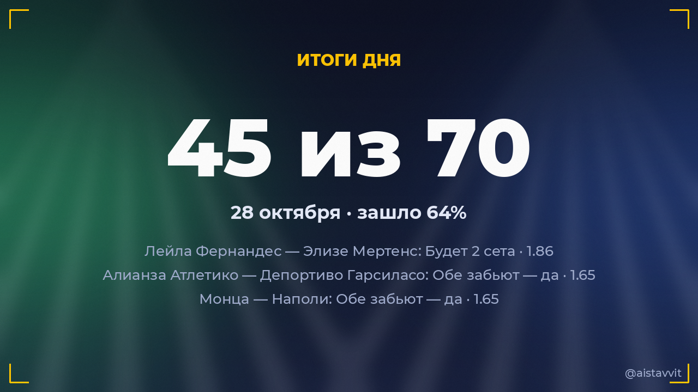

Итоги дня — 28 октября 2026
Зашло 45 из 70 основных прогнозов (64%), ROI дня -12.1%. Каждый прогноз учтён — и заходы, и промахи.

Все прогнозы дня
⚽ Торонто — Ди Си Юнайтед
1X · 1.282:1 ✅
1X · 1.282:1 ✅
🏀 Милуоки Бакс — Хьюстон Рокетс
ТБ 219.5 · 1.41100:132 ✅
ТБ 219.5 · 1.41100:132 ✅
🏀 Атланта Хокс — Майами Хит
ТБ 235.5 · 1.41117:129 ✅
ТБ 235.5 · 1.41117:129 ✅
⚽ Шарлотт — Клёб де Фут Монреаль
ИТ1 больше 1.5 · 1.364:0 ✅
ИТ1 больше 1.5 · 1.364:0 ✅
⚽ Интер Майами — Цинциннати
ИТ1 больше 1.5 · 1.272:2 ✅
ИТ1 больше 1.5 · 1.272:2 ✅
🏀 Детройт Пистонс — Шарлотт Хорнетс
П1 (с ОТ) · 1.3497:89 ✅
П1 (с ОТ) · 1.3497:89 ✅
⚽ Нью-Инглэнд Революшн — Нью-Йорк Ред Буллз
Обе забьют — да · 1.383:2 ✅
Обе забьют — да · 1.383:2 ✅
⚽ Нью-Йорк Сити — Атланта Юнайтед Фк
Обе забьют — да · 1.542:1 ✅
Обе забьют — да · 1.542:1 ✅
🏀 Индиана Пэйсерс — Филадельфия Сиксерс
П2 (с ОТ) · 1.36109:114 ✅
П2 (с ОТ) · 1.36109:114 ✅
⚽ Сьенсиано — Атлетико Грау
ИТ1 больше 1.5 · 1.323:0 ✅
ИТ1 больше 1.5 · 1.323:0 ✅
🏀 Торонто Рэпторс — Орландо Мэджик
ТБ 217.5 · 1.41129:99 ✅
ТБ 217.5 · 1.41129:99 ✅
🏒 Вашингтон — Филадельфия
ТБ 4.5 · 1.325:2 ✅
ТБ 4.5 · 1.325:2 ✅
⚽ Атлетико Тукуман — Платенсе
X2 · 1.331:1 ✅
X2 · 1.331:1 ✅
⚽ Баия — Сан-Паулу
1X · 1.273:2 ✅
1X · 1.273:2 ✅
⚽ Сантос — Палмейрас
X2 · 1.350:0 ✅
X2 · 1.350:0 ✅
⚽ Остин — Реал Солт-Лейк
X2 · 1.451:2 ✅
X2 · 1.451:2 ✅
⚽ Чикаго Файр — Орландо Сити
Обе забьют — да · 1.362:2 ✅
Обе забьют — да · 1.362:2 ✅
⚽ Миннесота Юнайтед — Спортинг Канзас-Сити
ИТ1 больше 1.5 · 1.303:1 ✅
ИТ1 больше 1.5 · 1.303:1 ✅
⚽ Нэшвилл — Филадельфия Юнион
1X · 1.240:0 ✅
1X · 1.240:0 ✅
🏀 Чикаго Буллз — Нью-Йорк Никс
П2 (с ОТ) · 1.36127:133 ✅
П2 (с ОТ) · 1.36127:133 ✅
⚽ Сент-Луис Сити — Портленд Тимберс
Обе забьют — да · 1.412:3 ✅
Обе забьют — да · 1.412:3 ✅
🏀 Миннесота Тимбервулвз — Голден Стэйт
ТБ 220.5 · 1.41114:119 ✅
ТБ 220.5 · 1.41114:119 ✅
🏀 Юта Джаз — Сан-Антонио Сперс
ТБ 226.5 · 1.41111:117 ✅
ТБ 226.5 · 1.41111:117 ✅
🏒 Колорадо — Нью-Джерси
ТМ 7.5 · 1.405:2 ✅
ТМ 7.5 · 1.405:2 ✅
⚽ Ванкувер Уайткэпс — Сан-Диего
ИТ1 больше 1.5 · 1.264:1 ✅
ИТ1 больше 1.5 · 1.264:1 ✅
🏒 Сиэтл — Торонто
ТБ 5.5 · 1.365:4 ✅
ТБ 5.5 · 1.365:4 ✅
⚽ Флуминенсе — Интернасьонал
12 (без ничьей) · 1.272:1 ✅
12 (без ничьей) · 1.272:1 ✅
🎾 Лейла Фернандес — Элизе Мертенс
Будет 2 сета · 1.862:0 ✅
Будет 2 сета · 1.862:0 ✅
⚽ Брагантино — Шапекоэнсе
ИТ1 больше 1.5 · 1.263:0 ✅
ИТ1 больше 1.5 · 1.263:0 ✅
⚽ Карлисле Унитед — Харрогате Тоун
12 (без ничьей) · 1.243:0 ✅
12 (без ничьей) · 1.243:0 ✅
⚽ Венеция — Интер
ИТ2 больше 1.5 · 1.270:2 ✅
ИТ2 больше 1.5 · 1.270:2 ✅
⚽ Борнмут — Астон Вилла
12 (без ничьей) · 1.253:0 ✅
12 (без ничьей) · 1.253:0 ✅
⚽ Монца — Наполи
Обе забьют — да · 1.651:4 ✅
Обе забьют — да · 1.651:4 ✅
⚽ Абердин — Фалкирк
12 (без ничьей) · 1.270:1 ✅
12 (без ничьей) · 1.270:1 ✅
⚽ Дунди — Килмарнок
1X · 1.273:1 ✅
1X · 1.273:1 ✅
⚽ Форест Грин Роверс — Еастлеигх
ИТ1 больше 1.5 · 1.492:0 ✅
ИТ1 больше 1.5 · 1.492:0 ✅
⚽ Бавария — 1. Фк Магдебург
ТБ 3.5 · 1.296:1 ✅
ТБ 3.5 · 1.296:1 ✅
⚽ Геноа — Ювентус
12 (без ничьей) · 1.262:0 ✅
12 (без ничьей) · 1.262:0 ✅
⚽ Суттон Унитед — Алдершот Тоун
12 (без ничьей) · 1.252:0 ✅
12 (без ничьей) · 1.252:0 ✅
⚽ Сандерленд — Брентфорд
ИТ2 больше 1.5 · 1.553:2 ✅
ИТ2 больше 1.5 · 1.553:2 ✅
⚽ Байер — 1. Фк Нурнберг
ТБ 2.5 · 1.285:2 ✅
ТБ 2.5 · 1.285:2 ✅
⚽ Ханновер 96 — Каисерслаутерн
12 (без ничьей) · 1.240:2 ✅
12 (без ничьей) · 1.240:2 ✅
⚽ Ол Лионнес — Интер
ТБ 3.5 · 1.586:0 ✅
ТБ 3.5 · 1.586:0 ✅
⚽ Алианза Атлетико — Депортиво Гарсиласо
Обе забьют — да · 1.653:2 ✅
Обе забьют — да · 1.653:2 ✅
⚽ Арсенал — Бенфика
ТБ 2.5 · 1.293:0 ✅
ТБ 2.5 · 1.293:0 ✅
⚽ Хеарт оф Мидлотиан — Рангерс
12 (без ничьей) · 1.252:2 ❌
12 (без ничьей) · 1.252:2 ❌
⚽ Интернасьональ Богота — Индепендьенте Медельин
X2 · 1.393:1 ❌
X2 · 1.393:1 ❌
🎾 Кармен Андриа Хереа — Кароль Монне
Победа: Кармен Андриа Хереа · 1.370:2 ❌
Победа: Кармен Андриа Хереа · 1.370:2 ❌
🏀 Клипперс — Лейкерс
ТБ 217.5 · 1.4187:103 ❌
ТБ 217.5 · 1.4187:103 ❌
🎾 Селена Яничевич — Элизабет Мандлик
Победа: Селена Жанисижевик · 1.821:2 ❌
Победа: Селена Жанисижевик · 1.821:2 ❌
⚽ Сан-Хосе Эртквейкс — Колорадо Рэпидз
12 (без ничьей) · 1.252:2 ❌
12 (без ничьей) · 1.252:2 ❌
⚽ Ст Миррен — Хиберниан
12 (без ничьей) · 1.251:1 ❌
12 (без ничьей) · 1.251:1 ❌
⚽ Сиэтл Саундерс — Хьюстон Динамо
Обе забьют — да · 1.540:1 ❌
Обе забьют — да · 1.540:1 ❌
🏀 Даллас Маверикс — Оклахома-Сити Тандер
П2 (с ОТ) · 1.52120:96 ❌
П2 (с ОТ) · 1.52120:96 ❌
⚽ Ст Жохнстоне — Мотеруелл
12 (без ничьей) · 1.282:2 ❌
12 (без ничьей) · 1.282:2 ❌
⚽ Холстеин Киел — Цг Хоффенхеим
ИТ2 больше 1.5 · 1.341:1 ❌
ИТ2 больше 1.5 · 1.341:1 ❌
🏒 Эдмонтон — Калгари
ТБ 5.5 · 1.344:0 ❌
ТБ 5.5 · 1.344:0 ❌
🏀 Кливленд — Вашингтон Уизардс
ТБ 233.5 · 1.41121:111 ❌
ТБ 233.5 · 1.41121:111 ❌
🎾 Алисия Паркс — Кимберли Биррелл
Победа: Кимберли Биррелл · 1.552:0 ❌
Победа: Кимберли Биррелл · 1.552:0 ❌
⚽ Даллас — Коламбус Крю
1X · 1.310:2 ❌
1X · 1.310:2 ❌
⚽ Ливерпуль — Челсеа
12 (без ничьей) · 1.261:1 ❌
12 (без ничьей) · 1.261:1 ❌
⚽ Парма — Удинезе
12 (без ничьей) · 1.320:0 ❌
12 (без ничьей) · 1.320:0 ❌
⚽ Фулхам — Кристал Паласе
Обе забьют — да · 1.640:1 ❌
Обе забьют — да · 1.640:1 ❌
⚽ Универсидад Католика — Аудакс Итальяно
ИТ1 больше 1.5 · 1.661:1 ❌
ИТ1 больше 1.5 · 1.661:1 ❌
⚽ Онсе Кальдас — Альянса
ИТ1 больше 1.5 · 1.621:0 ❌
ИТ1 больше 1.5 · 1.621:0 ❌
⚽ Эксельсиор Масслёйс — Херенвен
ТБ 2.5 · 1.270:2 ❌
ТБ 2.5 · 1.270:2 ❌
⚽ Ремо — Ботафого
X2 · 1.412:1 ❌
X2 · 1.412:1 ❌
⚽ Селтик — Данди Юнайтед
П1 · 1.262:2 ❌
П1 · 1.262:2 ❌
🏀 Нью-Орлеан Пеликанс — Денвер Наггетс
ТБ 233.5 · 1.4191:104 ❌
ТБ 233.5 · 1.4191:104 ❌
⚽ Милан — Болонья
П1 · 1.622:4 ❌
П1 · 1.622:4 ❌
← предыдущий день · следующий день → · статистика бота · прогнозы на сегодня · Telegram-канал